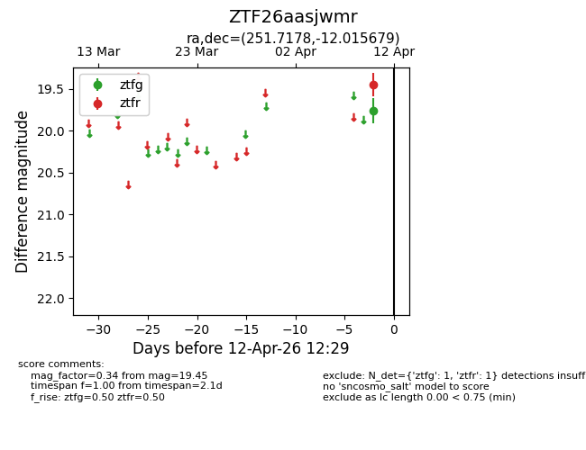
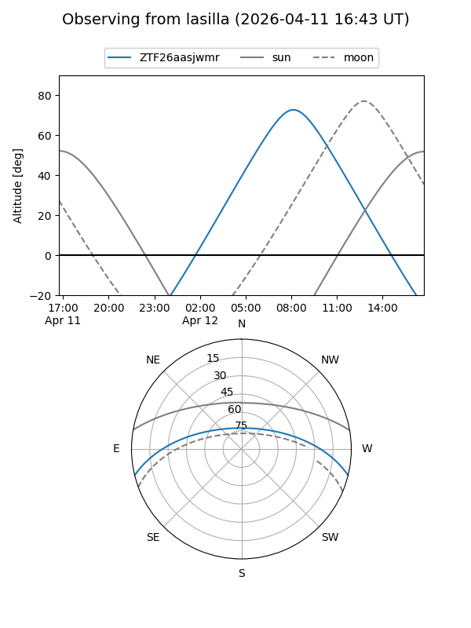
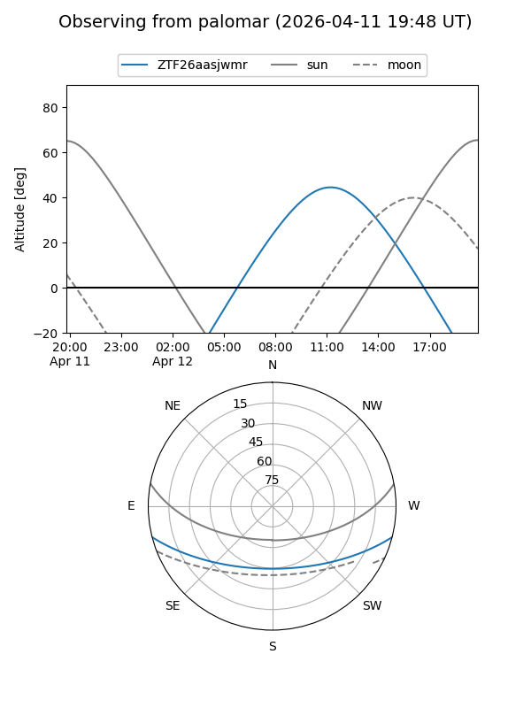

ZTF26aasjwmr
Target ZTF26aasjwmr at 2026-04-12 12:39
Aliases and brokers:
FINK: link
Lasair: link
ALeRCE: link
alt names
ZTF26aasjwmr (ztf,fink_ztf)
Coordinates:
equatorial (ra, dec) = 251.7178,-12.01568
equatorial (HMS+DMS) = 16:46:52.26,-12:00:56.44
galactic (l, b) = (6.5118,+20.80894)
Flags:
Photometry:
last ztfg=19.76, ztfr=19.45
1 ztfg, 1 ztfr detections
Lightcurve

Visibility


Additional plots